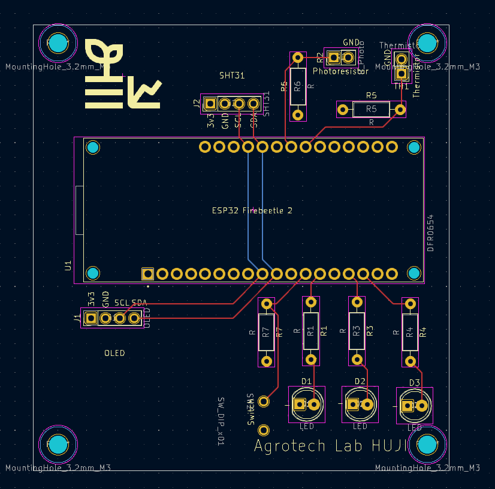

34 Assignment 4
34.1 Goal
Assemble and test your custom ESP32 sensor board.
This assignment focuses on hardware assembly, soldering, and verifying that all components on the PCB work correctly.
You are encouraged to be creative (see Bonus section), but the minimum requirement is that all onboard components function properly.
34.2 Hardware
You received a custom PCB that includes:
- ESP32 header (you bring your ESP32)
- I2C OLED (4-pin)
- SHT31 temperature & humidity sensor (I2C)
- 3× LEDs (each connected to a different GPIO via resistor)
- 1× momentary push-button (GPIO input)
- thermistor with voltage divider
- photoresistor (LDR) with voltage divider
- all required resistors, headers, and connectors (through-hole)
- PCB schematics (
.pdf) and PCB layout (.png)
This is your first time soldering a complete board.
Work slowly, inspect each joint, and test as you go. Poor soldering is the #1 cause of errors.
34.3 Schematic
34.4 PCB Layout

34.5 What your project must do
34.5.1 Assemble the PCB
- Solder all components: headers, resistors, sensors, LEDs, button, connectors.
- Ensure correct resistor placement for the thermistor and photoresistor voltage dividers.
- Plug in the ESP32 and OLED once the board is fully assembled.
34.5.2 Demonstrate that every element works
Write Arduino/ESP32 code that shows:
- OLED displays text correctly
- SHT31 returns live temperature & humidity readings
- Thermistor analog value changes when heated/cooled
- Photoresistor analog value changes with light/dark
- LEDs turn ON/OFF individually via GPIO
- Button press is detected correctly (debouncing optional)
You may display values on the OLED or print them to Serial Monitor, or both.
34.6 Bonus ideas (optional)
These are not required, but highly encouraged:
- creative OLED interface (icons, animations, menus)
- use the button to switch display modes
- implement a simple data logger (e.g., min/max temperature or light level)
- combine sensors into useful indicators
- e.g., “room too dark,” “bright sunlight,” “hot/cold,” etc.
- small interactive demo using LEDs and button
- reaction game
- bar-graph of brightness
- fade LED based on light level
- reaction game
- Be creative
34.7 What to submit
- Short video (30–90 seconds)
Demonstrating:- working OLED
- SHT31 reading
- thermistor response
- photoresistor response
- LEDs turning on/off
- button press detection
- working OLED
- Your Arduino/PlatformIO code (
.inoor full project folder)
34.8 Tips for successful assembly
- Solder from lowest components to highest (resistors → ICs → headers).
- Check polarity for the LEDs and SHT31 board.
- Keep the soldering iron tip clean and tinned.
- If something doesn’t work, inspect solder joints first.